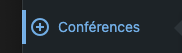
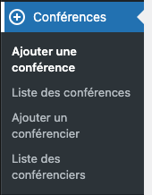
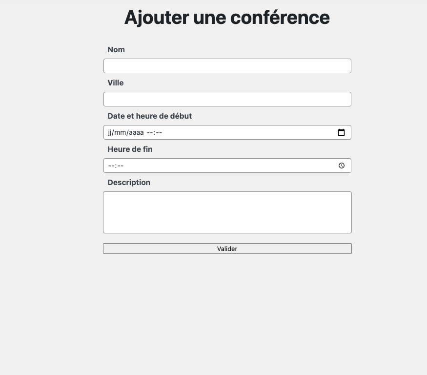
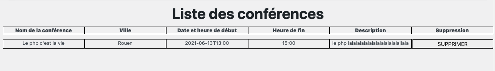
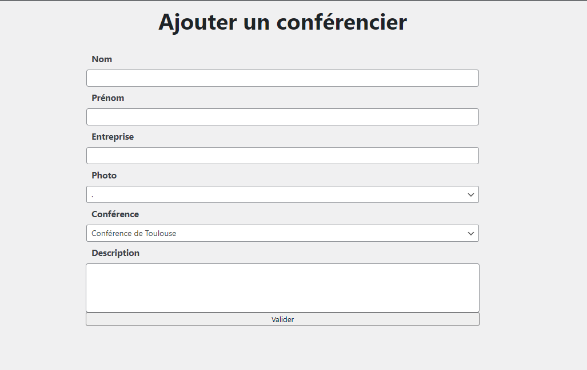
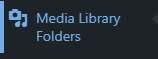
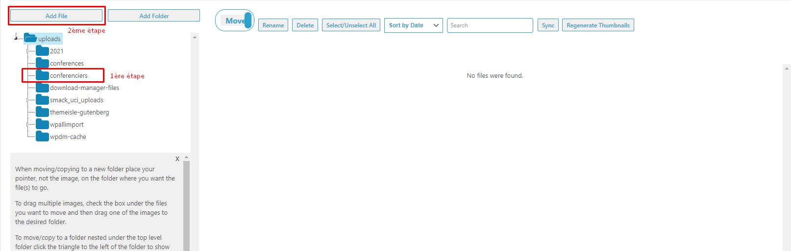
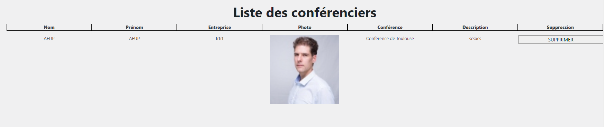

Conférence
Cette extension vous permet de pouvoir créer et gérer vos conférences et conférenciers.
Lors de l'activation de l'extension la base de donnée est automatiquement créée.
La page est également créer automatiquement et le shortcode est aussi implémenté dans la page lors de sa création.
Dirigez vous dans le menu latéral de gauche et cliquez sur cet onglet :

un sous menu apparaitra en dessous

Ajouter une conférence
C'est dans le formulaire du sous-menu "Ajouter une conférence" que vous commencerez à créer des conférences. Renseignez tous les champs et cliquez sur valider afin d'enregistrer votre conférence.
Dans le cas où vous voudriez que la conférence apparaisse sur la Home Page il faut renseigner dans le champ "ville" du formulaire : "Home".

Gestion des conférences
Apres avoir créé votre première conférence, dirigez vous dans le sous menu liste des conférences afin de découvrir une vue d'ensemble des conférences. Dans ce menu vous pourrez supprimer vos conférences.

Ajouter un conférencier
C'est dans le formulaire du sous-menu "Ajouter un conférencier" que vous commencerez à créer des conférenciers. Renseignez tous les champs et cliquez sur valider afin d'enregistrer votre conférencier.

Ajout des photos de conférencier
Afin de pouvoir joindre une photo à chaque conférencier, il faut les télécharger au préalable. Pour ce faire, vous devez cliquez sur l'onglet Media Library Folders dans le menu latéral de gauche.

Sélectionnez le dossier "conférenciers" dans le menu de gauche

Puis sur "Add file" pour ajouter votre photo et ainsi le retrouver dans le formulaire de création de conférencier.
Gestion des conférenciers
Apres avoir créé votre premier conférencier, dirigez vous dans le sous menu liste des conférenciers afin de découvrir une vue d'ensemble des conférenciers. Dans ce menu vous pourrez supprimer vos conférenciers.

Insertion liste des conférences et conférenciers
- Pour ajouter les conférences et conférienciers veuillez insérer ce shortcode dans vos page [conferencePost]